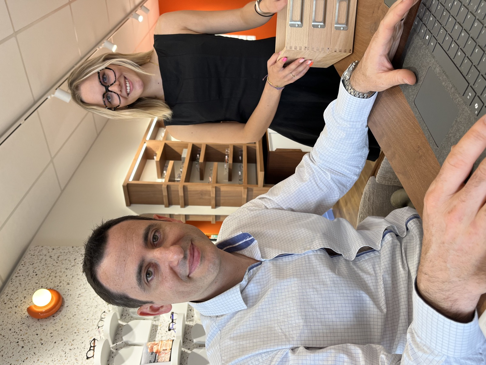

Téléconsultation d'ophtalmologie augmentée, au Passage et à Bias
Dans nos magasins du Passage et de Bias, sur rendez-vous, vous passez des examens avec des équipements dédiés, puis vous échangez en visioconférence avec un ophtalmologue. Ce service s'adresse aux personnes de 16 ans et plus.
Ce n'est pas un service d'urgence : en cas d'urgence, contactez le SAMU au 15. Téléconsultation réservée aux personnes de 16 ans et plus, sur rendez-vous.
Téléconsultation, rendez-vous : Le Passage Bias

Qu'est-ce que la téléconsultation augmentée ?
Une consultation d'ophtalmologie en visioconférence, complétée par des examens réalisés en magasin, par votre opticien ou un professionnel de santé, avec des équipements dédiés. L'ophtalmologiste analyse ces examens et répond à vos questions.
Un service complémentaire
Si vous pouvez obtenir un rendez-vous avec un ophtalmologue, c'est la première option. La téléconsultation augmentée s'adresse aux patients qui rencontrent des difficultés à obtenir un rendez-vous avec un ophtalmologue.
Conditions : avoir 16 ans ou plus et prendre rendez-vous. Votre opticien vérifie votre éligibilité en magasin.
Comment ça se passe ?
- Présentez-vous en magasin : votre opticien vous accueille et vérifie votre éligibilité.
- Vérifiez les disponibilités : selon les jours de présence des professionnels de santé, renseignez-vous auprès de votre opticien.
- Examen de vue en magasin : votre opticien ou un professionnel de santé réalise les mesures avec des équipements dédiés.
- Échangez avec l'ophtalmologiste : il analyse vos examens en visioconférence et répond à vos questions.
- Conclusion de la consultation : si l'ophtalmologue le juge nécessaire, une ordonnance vous est remise.
À apporter
Votre carte Vitale, votre carte bancaire, vos lunettes actuelles, votre dernière ordonnance.
Adaptée pour
Première consultation, renouvellement de lunettes, renouvellement de lentilles.
Ce que propose la téléconsultation augmentée
Un bilan visuel avec des professionnels de santé. Prise en charge Assurance Maladie et mutuelle*. Ordonnance si nécessaire, avec renouvellement de lentilles : la décision de prescrire appartient à l'ophtalmologue. Un délai moyen indicatif de 6 jours pour obtenir un rendez-vous**.
*Prise en charge par l'Assurance Maladie et la mutuelle selon le niveau de couverture du patient et les conditions de remboursement.
Nos services sont adaptés aux patients rencontrant des difficultés à obtenir un rendez-vous avec un ophtalmologue.
Ce n'est pas un service d'urgence : en cas d'urgence, contactez le SAMU au 15.
**Délai moyen communiqué par notre partenaire de téléconsultation, donné à titre indicatif : il peut varier selon les disponibilités.
Dans nos deux magasins
Renseignez-vous auprès de votre opticien, ou prenez rendez-vous sur Doctolib.
Le Passage, près d'Agen
Lunettes & Co, 64 allée du Loriot, ZAC de Lacassagne, 47520 Le Passage
05 35 55 92 50
Bias, près de Villeneuve-sur-Lot
Lunettes & Co, Centre commercial Auchan (Ponservat), avenue de Bordeaux, 47300 Bias
05 53 40 19 96
Questions fréquentes
La téléconsultation remplace-t-elle un rendez-vous chez l'ophtalmologue ?
Non, c'est un service complémentaire. Si vous pouvez obtenir un rendez-vous avec un ophtalmologue, c'est la première option. La téléconsultation s'adresse aux personnes qui ont des difficultés à obtenir un rendez-vous avec un ophtalmologue.
Qui peut y accéder ?
Les personnes de 16 ans et plus, sur rendez-vous. Votre opticien vérifie votre éligibilité en magasin.
Dois-je prendre rendez-vous ?
Oui. Vous réservez en ligne sur Doctolib, pour le magasin de votre choix.
Mon enfant peut-il faire une téléconsultation ?
Non. Pour un enfant, il faut consulter un ophtalmologue.
Que dois-je apporter ?
Votre carte Vitale, votre carte bancaire, vos lunettes actuelles, votre dernière ordonnance.
Est-ce un service d'urgence ?
Non. En cas d'urgence, contactez le SAMU au 15.
Puis-je acheter mes lunettes chez vous après ?
Oui, si vous le souhaitez, notre équipe vous conseille en magasin.
Combien de temps mon ordonnance de lunettes ou de lentilles est-elle valable ?
Cela dépend de votre âge à la date de l'ordonnance. Lunettes : 1 an avant 16 ans, 5 ans de 16 à 42 ans, 3 ans après 42 ans. Lentilles de contact : 1 an avant 16 ans, 3 ans à partir de 16 ans. Sauf mention contraire sur l'ordonnance.
Mon ordonnance est trop ancienne, que faire ?
Pour renouveler vos lunettes, il faut une ordonnance en cours de validité. Si nécessaire, l'ophtalmologue vous remet une ordonnance à l'issue de la consultation.